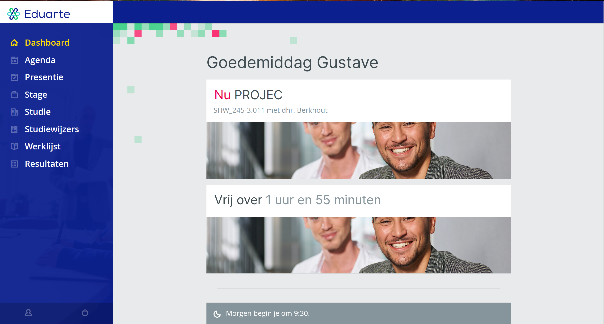
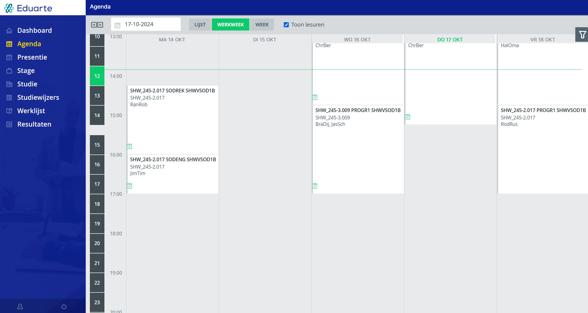
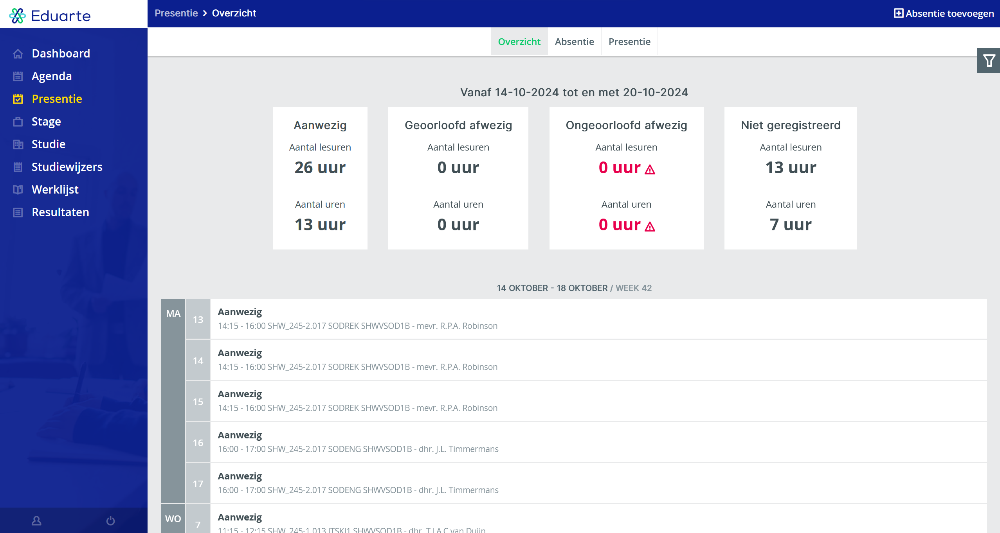
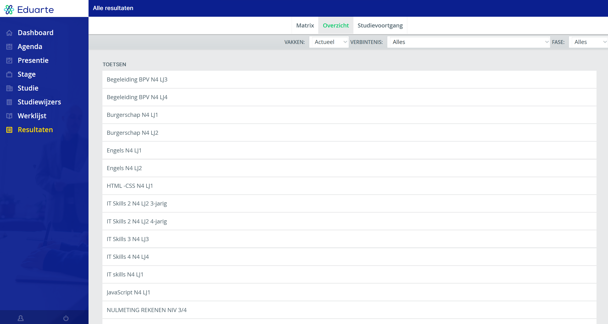

Eduarte
Eduarte is een website waarmee studenten diverse gegevens kunnen vinden, zoals: hun aanwezigheid, het rooster van de week, examresultaten en meer.
Het rooster
Op de roosterspagina kunnen we zien op welke tijden we welke lessen hebben. Daarnaast kunnen we ook zien of er een wijziging is gekomen in hoe laat we binnen moeten komen.
Aanwezigheid
Op deze pagina kunnen we zien hoe vaak en voor hoe lang we niet aanwezig zijn geweest bij de lessen.
Examresultaten
Op deze pagina kunnen we onze cijfers van onze examens terugvinden, en dit is vaak ook de eerste plek waar de resultaten worden afgegeven.
Laten we een kijkje nemen op de site zelf.
Het ouderportaal
Deze site is speciaal voor ouders/verzorgers.
Hier kunnen jullie dezelfde dingen bijhouden en zien hoe het met ons gaat.
Wat volgt is een uitleg van hoe jullie er komen en inloggen.